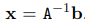
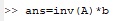
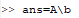
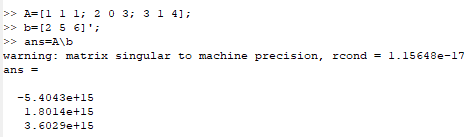
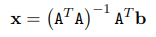

Увод у једначине
Решавање система линеарних једначина Ax=b
Једна од главних примена матрица је у представљању и решавању система линераних једначина. Octave је погодан за рад са матрицама, самим тим и са овим системима. Нека је дат систем линеарних једначина

где су aij и bij познате вредности, а наш задатак је да нађемо xi тако да истовремено задовољавају горе наведене услове. Овај систем можемо написати и у матричној форми:
или другачије Ax=b, где је А матрица са познатим коефицијентима, b вектор колона са константама, а x колона са непознатим коефицијентима.
Случај када је матрица А инвертабилна
У случају када је број једначина једнак броју непознатих и када је матрица А инвертабилна, решење можемо наћи као . Octave има подршку за израчунавање инверза матрице као и за множење матрица, па решење овог система лако налазимо на следећи начин

Гаусов метод елиминације
Иако је Octave оптимизован за рад са матрицама, рачунање инверза је врло неефикасна операција. Гаусов метод елиминације је доста ефекаснији начин решавања једначине Ax=b.
У језику Octave је дефинисана операција левог дељења матрица за инвертабилне матрице одговарајућих димензија. Ова операција се обележава са А\b и представља решење једначине Ax=b које се у позадини налази применом Гаусове методе елиминације.

Случаја када матрица А није инвертабилна
Ако матрица А није инвертабилна и покушамо да решимо систем Ax=b оператором дељења матрица добијамо следеће упозорење

Octave је успешно извршио операцију, међутим то није решење полазне једначине. Како је матрица А сингуларна (што нас је Octave и упозорио), овај систем нема решења. Због одређених грешака у заокругливању приликом Гаусове елиминације, Octave је нашао неки резултат ове операције, али то није решење наше једначине. Дакле, треба бити свестан потенцијалне грешке када се користи оператор дељења матрица и треба га обазриво користити уз претходну проверу ранка матрице.
Предефинисани системи линеарних једначина
Ако у систему имамо више независних једначина него непознатих, ради се о предефинисаном систему. Ово је честа ситуација у пракси јер желимо да наш модел одговара што већем броју измерених података. У овом случају нема тачног решења, али тежимо да нађемо решење које најприближније одговара постављеним условима у средњеквадратном смислу. До таквог решења долазимо на следећи начин

Решавање система нелинеарних једначина
Octave има подршку и за решавање система нелинеарних једначина. Систем прво сведемо на облик F(x)=0, а затим позивом функције fsolve добијемо тражено решење. Функција fsolve налази решење једначине F(x)=0 применом итеративних метода. Због тога јој је непходно проследити као параметар почетну тачку за итеративну методу, а она као резултат враћа решење и информацију о томе да ли је дошло до ковергенције коришћеног итеративног низа.